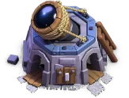
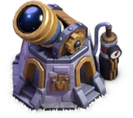
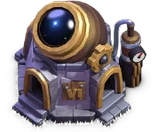
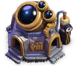

Star Laboratory (Builder Base)
Builder Base Buildings
Updated: 16 September 2026 · By the Goblins Farm team
The Star Laboratory searches the heavens for secrets to unlock a troop's full potential. Improve troop hitpoints, damage and housing space in addition to special troop abilities!
What the numbers say
Star Laboratory is an army building in the Builder Base. It is unlocked at Builder Hall 1 and upgradeable through 10 levels. It occupies 4x4 tiles.
Across those levels it gains hitpoints from 650 to 2,750.
Taking one from level 1 to 10 costs 16,066,000 Builder Elixir in total, and 30 days 20 hours of build time.
 How it looks at each level
How it looks at each level




Stats by level
| Level | Hitpoints | DPS or effect | Build cost | Build time | Builder Hall |
|---|---|---|---|---|---|
| 1 | 650 | — | 1,000 Builder Elixir | Instant | 1 |
| 2 | 800 | — | 15,000 Builder Elixir | 10 m | 2 |
| 3 | 975 | — | 50,000 Builder Elixir | 30 m | 3 |
| 4 | 1,150 | — | 300,000 Builder Elixir | 8 h | 4 |
| 5 | 1,350 | — | 700,000 Builder Elixir | 12 h | 5 |
| 6 | 1,600 | — | 1,000,000 Builder Elixir | 2 d | 6 |
| 7 | 1,850 | — | 2,000,000 Builder Elixir | 4 d | 7 |
| 8 | 2,150 | — | 3,000,000 Builder Elixir | 6 d | 8 |
| 9 | 2,450 | — | 4,000,000 Builder Elixir | 8 d | 9 |
| 10 | 2,750 | — | 5,000,000 Builder Elixir | 10 d | 10 |

Where these numbers come from. Read from Clash of Clans' own game files, client build 18.600.3. They are exact for that build and do not reflect anything released after it, so verify in game before committing an upgrade.
Game values are read from Supercell's own game files, reproduced as fan content under Supercell's Fan Content Policy. Goblins Farm is not affiliated with, endorsed, sponsored, or specifically approved by Supercell, and Supercell is not responsible for it.
 Keep reading
Keep reading
Goblins Farm is not affiliated with, endorsed by, sponsored by, or specifically approved by Supercell. Clash of Clans is a trademark of Supercell Oy. This material is unofficial fan content produced under Supercell's Fan Content Policy. Game values change with every update; always verify in-game before committing an upgrade.